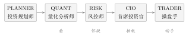

第一章一个人，怎么同时当研究员、风控和操盘手？
1.1早上九点二十四分，我在开会
二零二六年九月十日，星期四，上午九点二十四分。 我坐在会议室里，投影仪上放着第三季度的项目复盘，主讲人正在解释一张我早就看过的图。我的手机在桌面底下亮了一下——不是消息，是我自己设的闹钟。 闹钟备注写着六个字：看今天该买什么。 九点三十分，A 股开盘。而我要在九点五十分之前，把那份复盘的第一版意见交出去。两件事撞在一起，一件都不能推迟，一件都不能敷衍。 这不是那一天的意外。这是我过去两年的常态。 我把“一个业余投资者每天该做的事”写在一张纸上，写完发现是九件：- 看市场——今天大盘是什么状态，是暖的还是冷的；
- 找机会——哪个行业在走强，哪条消息值得重视；
- 做研究——把感兴趣的几家公司翻一遍报表；
- 选股票——在几千只股票里排出前几名；
- 做回测——把想法放到历史上跑一遍，看看是不是自欺欺人；
- 控风险——算清楚最坏情况会亏多少，仓位该怎么收；
- 管组合——手里已经有五只，新来的这只跟它们冲不冲突；
- 交易——真的下单，还要盯着成交；
- 复盘——收盘后回头看看，今天哪一步想错了。
1.2我的第一个答案，错得很彻底
我一开始的答案是：找一个更聪明的模型，把这些事全交给它。 逻辑听起来很顺：既然这九件事都需要判断力，那就找一个判断力最强的家伙，让它从头做到尾。中间不交接，就不会掉信息；不分工，就不会互相推诿。 我甚至已经想好了提示词的开头：你是一位经验丰富的量化投资专家，请分析今天的市场并决定买什么。 第一次跑，它给了我一份相当漂亮的回答。市场判断、行业排序、三只候选、买入理由、风险提示，一样不缺。文笔很好，逻辑也很顺。 第二次跑，我发现它推荐的第一只股票，和第一次完全不同。 第三次跑，我又发现它说的“当前市盈率 18.3 倍”这个数字，在前两次的回答里根本没有出现过，而且我在行情库里查不到。 那一刻我意识到问题不在“它聪不聪明”，而在**我把一个需要被拆开的过程，塞进了一个没有接缝的黑盒子**。 黑盒子有三个致命的毛病： 第一，它的正确性无法局部检查。输出一份完整的投资建议，你只能选择全信或者全不信。你没法说“行业判断我认可，风险那一块我不放心”。因为它是同一个模型在同一次生成的，你拆不开。 第二，它没有内部制衡。一个人既负责“推荐买什么”，又负责“评估这个推荐的风险”，那么在生成文字的那一刻，这两个目标是在同一段计算里被同时优化的。它天然会选择自洽的答案，而不是暴露矛盾的答案。 第三，“什么都做”的角色，最后一定只做其中一件事。这不是模型的缺陷，是人性的规律，也是任何被过度授权的系统的规律。我见过太多次：被要求“既要收益又要安全”的策略，最后一定选择其中一个，然后给另一个找一套说辞。
你注册了一家公司，法人、财务、销售、法务、出纳，全是你自己。
第一天，你签了一份合同。
第二天，你发现合同里的付款条件是“货到三个月后付”，而公司账上只够撑四十天。
问题不在于你不够聪明。问题在于：**在同一个脑子里，“拿下这单”和“这笔钱什么时候回来”，会被合并成一个念头。** 你不会先写完销售方案，再换一顶帽子去审它——你只会一边写一边替自己圆场。
要解决它，不需要一个更聪明的脑子，需要**第二个脑子，并且给它一个不同的考核指标**。
1.3不是找人，是开一家公司
一间五个人的小公司，是怎么解决“又要进攻又要防守”这个矛盾的？ 它不靠让每个人都变成完人。它靠三件事：**分岗、定责、留痕**。 分岗，是说每个人只盯一小块；定责，是说每块工作有一个明确的、可被追问的产出；留痕，是说每个判断都要写下来，写下来的东西要能被别人查。 这三件事，恰好可以把那九件事切成五份，并且切得干干净净。 我们先把公司需要的“工种”想清楚。不要去查任何资料，就凭常识问三个问题： 谁看？——谁负责把外部世界的信息变成事实。 谁想？——谁负责基于事实形成主张。 谁动手？——谁负责把主张变成动作。 三个问题，三个工种。这是一个“差不多对”的模型，它抓住了分工的本质。但它有一个明显的裂缝：在“谁想”里面，“提出主张”和“否决主张”被塞进了同一个人。 我们刚刚才用了整整一节论证为什么这件事不能干。所以“谁想”必须再拆一刀。 拆完还有第二道裂缝。“谁看”里面，“搞清楚主人想要什么”和“研究市场发生了什么”也不是一回事。前者是问客户的预算和风险偏好，后者是问市场。一个向内，一个向外，混在一起就会出现那种最经典的错误：因为我想赚大钱，所以我看什么都觉得能赚大钱。
一台心脏手术，台上至少站着三类人：主刀、助手、麻醉。
助手不是“水平差一点的主刀”，麻醉也不是“管睡觉的助手”。他们站在同一个台子边上，但**看的是不同的仪表，担的是不同的责任，犯的是不同性质的错**。
主刀可以决定在哪一刀切下去；麻醉可以决定这台手术现在能不能继续——即使主刀认为可以。
没有人会说“让主刀一个人干完算了，反正他最懂”。因为所有人都知道：**手术失败的代价，主要不是因为主刀不够熟练，而是因为当主刀判断失误时，没有人有资格喊停。**
1.4五个人，五份活
表 1.1 是这支队伍的编制。注意第四列——每个岗位在系统里都对应一组**有名字的任务类型**，而不是一句模糊的“负责相关分析”。任务类型是这支队伍最关键的工程细节之一，我们在第 3 章会专门拆开它，这里先看个大概。| 角色 | 中文 | 一句话职责 | 任务类型数 |
AgentPlanner | 投资规划师 | 弄明白你要什么、你能承受什么 | 3 |
AgentQuant | 量化分析师 | 市场发生了什么、哪些股票值得排前面 | 7 |
AgentRisk | 风控师 | 这件事最坏会坏到什么程度 | 6 |
AgentCIO | 首席投资官 | 综合所有意见，拍板，并对结果负责 | 6 |
AgentTrader | 操盘手 | 把拍板的结果变成订单，并盯着它成交 | 5 |
任务类型总数 27 个，定义于 internal/agentworkflow/models.go。
系统源码 internal/agentworkflow/models.go；核对时间 2026-09-24。

UPDATE_PROFILE）、检查投资委托书是否还成立（CHECK_MANDATE）、出合规报告（COMPLIANCE_REPORT）。
它不管市场涨跌，它管的是那把尺子。尺子要是歪的，后面所有人量出来的都是错的。第 26 章我们会看到，这把尺子最终会变成一个“单票权重上限”——风险等级保守的人，上限是 15%；均衡是 20%；成长是 30%。
量化分析师（Quant）。它是队伍里最像“研究员”的人，任务最多，七项：市场扫描（MARKET_SCAN）、因子健康度检查（FACTOR_HEALTH）、选股（STOCK_SCREENING）、组合模拟（PORTFOLIO_SIMULATION），再加上寻找新因子（ALPHA_DISCOVERY）、判断市场状态（REGIME_DETECTION）、因子失效分析（FACTOR_BREAK_ANALYSIS）。
它的产出必须是可复算的数字，不是形容词。“动量因子最近 20 天有效”这句话在它这里是不合格的，合格的写法是“动量因子最近 20 天的 RankIC 是某某值，覆盖了百分之多少的样本”。
风控师（Risk）。它是队伍里唯一有否决权的人，六项任务全部围绕“最坏情况”：隔夜风险（OVERNIGHT_RISK）、日终风险（END_OF_DAY_RISK）、交易风险检查（TRADE_RISK_CHECK）、压力测试（STRESS_TEST）、风险评估（RISK_ASSESSMENT）、风险预警（RISK_ALERT）。
请特别注意“否决”这两个字。风控师不负责提出更好的方案，它只负责说“这个方案不行”。一个只能说不、不能说是的角色，看起来很弱——这恰恰是它的力量来源。第 22 章会证明，一条只能收紧、不能放松的约束，是整个系统里最难被绕过的那一条。
首席投资官（CIO）。它是唯一能拍板的人，六项任务：晨间简报（MORNING_BRIEF）、投资决策（INVESTMENT_DECISION）、组合回顾（PORTFOLIO_REVIEW）、紧急决策（EMERGENCY_DECISION）、每日复盘（DAILY_REVIEW）、T+1 计划（T1_PLANNING）。
它的位置很微妙。它既不是最懂市场的（那是 Quant），也不是最懂风险的（那是 Risk），它是那个要在两边都不服气的时候给出一个数的人。第 6 到第 8 章会花整整三章讲它怎么拍板，因为这是全书技术含量最高的一段。
操盘手（Trader）。它唯一的工作是把决定变成订单，五项任务：生成订单（GENERATE_ORDER）、执行订单（EXECUTE_ORDER）、监控订单（MONITOR_ORDER）、执行报告（EXECUTION_REPORT）、对账（RECONCILIATION）。
它是队伍里权限最小的角色。在系统的权限定义里，它只有一个权限：读用户画像。它不能选股、不能改风险上限、不能否决任何人。它甚至不能“觉得今天这只票不错所以多买一点”——它的买入口被一道硬闸门卡着，第 31 章会讲那道闸门。
这一节的骨架
五个岗位 = 三个问题的两次细分：
谁看（Planner 向内 + Quant 向外）→ 谁想（Risk 否决 + CIO 拍板）→ 谁动手（Trader）。
每个岗位的产出必须能被下一个岗位直接使用，也必须能被第一个人复核。
谁看（Planner 向内 + Quant 向外）→ 谁想（Risk 否决 + CIO 拍板）→ 谁动手（Trader）。
每个岗位的产出必须能被下一个岗位直接使用，也必须能被第一个人复核。
1.5它在系统里长什么样
上面讲的全是“应该怎样”。一个真的跑起来的系统，必须把“应该”写成代码。 第一件事，是把五个角色变成五个常量。在internal/agentworkflow/models.go 里，它们长这样：
const (
AgentCIO AgentRole = "CIO" // 首席投资官
AgentPlanner AgentRole = "PLANNER" // 投资规划师
AgentQuant AgentRole = "QUANT" // 量化分析师
AgentRisk AgentRole = "RISK" // 风控师
AgentTrader AgentRole = "TRADER" // 操盘手
)internal/brainhost/team_tools.go 里，系统逐个调用 RegisterTool 把工具挂到对应角色身上。当前版本一共装配了 25 个工具入口系统源码 internal/brainhost/team_tools.go，注册调用点位于第 338--452 行区间；核对时间 2026-09-24。1，其中一部分的可见范围如表 1.2 所示。
| 工具名 | 可用角色 | 它回答的问题 |
get_tdx_stock_data | QUANT, RISK | 这只股票的历史行情长什么样 |
search_tdx_stocks | QUANT, CIO | 在几千只股票里找出符合条件的那几只 |
run_backtest | QUANT | 这个策略放到历史上跑一遍，结果如何 |
market_sixdim_detect | CIO, PLANNER, RISK, QUANT | 今天这个市场，适合下多少注 |
select_next_day_strategy | QUANT, CIO | 明天用哪条策略来管持仓 |
optimize_portfolio | CIO, QUANT | 这五只股票各买多少，组合波动最小 |
系统源码 internal/brainhost/team_tools.go；核对时间 2026-09-24。
run_backtest（跑回测）只有 QUANT 能用——因为回测是“研究”，研究的结果必须经过风控和 CIO 才能变成动作。而 market_sixdim_detect（市场判势）四个角色都能用，因为“今天市场好不好”是共享上下文，不是任何人的私产。
很多介绍多智能体的文章，画面上是五个并排的对话框，每个对话框里贴一段不同的人格设定：“你是一个谨慎的风控师”“你是一个激进的交易员”。
这不是多智能体，这是多开窗口。它们的区别只有一个问题就能测出来：如果那个“激进交易员”窗口直接说“买入 603xxx 一万股”，系统会真的下单吗？
在这个系统里不会——因为下单权限只给了
AgentTrader，而 AgentTrader 的工具集里根本没有“自己决定买什么”这个能力。人格设定挡不住越权，只有代码里的权限表挡得住。所以判断一个多智能体系统是真货还是演示品，不看它有几个角色，看它有几个会拒绝的角色。
我在最初那版提示词里，用的词是“你是一位经验丰富的量化投资专家”。
这句话听起来无害，其实是在给模型发一张空白支票：它被授权“凭本事判断”。而语言模型的本事，恰恰是生成看起来合理的文本——这两件事在投资里几乎是反义词。
后来的做法是彻底反过来：不再问它“你懂不懂”，而是给它一份合同，告诉它该做哪几步、能做哪些事、产出必须长什么样、数据取不到时必须说什么。
一个诚实的失败比一个漂亮的编造有价值一万倍。系统里为此专门留了两个“拒答码”——
DATA_UNAVAILABLE 和 DATA_INVALID。它们的存在本身就是设计：如果不给模型留一个“我不知道”的出口，它就只能编。
1.6它还没有被约束住
现在你大概明白这支队伍长什么样了。但有三个问题还没回答，它们正好是接下来三章的题目。 问题一：划分了岗位，谁听谁的？我们说风控师有否决权，说操盘手权限最小。这些说法在系统的哪个文件里？如果一个角色被删了权限记录，系统会放行还是拒绝？这是第 2 章的内容。 问题二：凭什么相信它真的照做了？“任务类型”这四个字听起来像文档里的分类，但在系统里它是可执行的约束。一个模糊的指令会被拆成什么？谁检查它有没有跑偏？这是第 3 章的内容。 问题三：它拿什么去做？我们反复说“模型的产出必须是可复算的数字”，可是模型自己算不算数？谁来算？这是第 4 章的内容。 回到开头那张贴在显示器边上的纸。它现在还在，只是内容变了。原来写的是九件事，现在写的是五个岗位——以及每个岗位不许做的事。 一个人当然没办法同时当研究员、风控和操盘手。但他可以当那个设岗、定规、看记录的人。这大概是这本书里最重要的一次身份转换：你从“操盘的人”，变成了“开公司的人”。- 五个角色的常量与中英映射：
internal/agentworkflow/models.go - 27 个任务类型的定义：
internal/agentworkflow/models.go - 权限矩阵与三条硬约束：
internal/agentworkflow/permissions.go - 团队装配与工具的按角色注册：
internal/brainhost/team_tools.go - 前端“AI 团队”页（5 个状态卡片、市场时段指示、8 权限 × 5 角色矩阵）：
ui/src/pages/下的团队页面，路由表在ui/src/App.tsx
动手试一试（五分钟）
- 打开系统，进入左侧菜单的AI 团队页。
- 找到“权限矩阵”表格。它是 8 行（操作权限）乘 5 列（角色）。逐行看：哪些操作同时被两个以上角色共享？哪些操作只属于一个角色？
- 找到
market_sixdim_detect对应的那一行“市场判势”，看它被授予了哪几个角色。然后再找“执行订单”，看它被授予了谁。 - 自己回答一个问题：如果让你给这五个角色各删掉一个权限，你会删谁的那个？为什么？